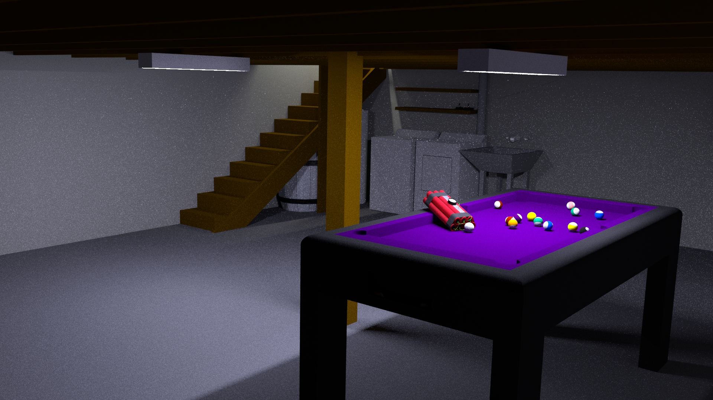
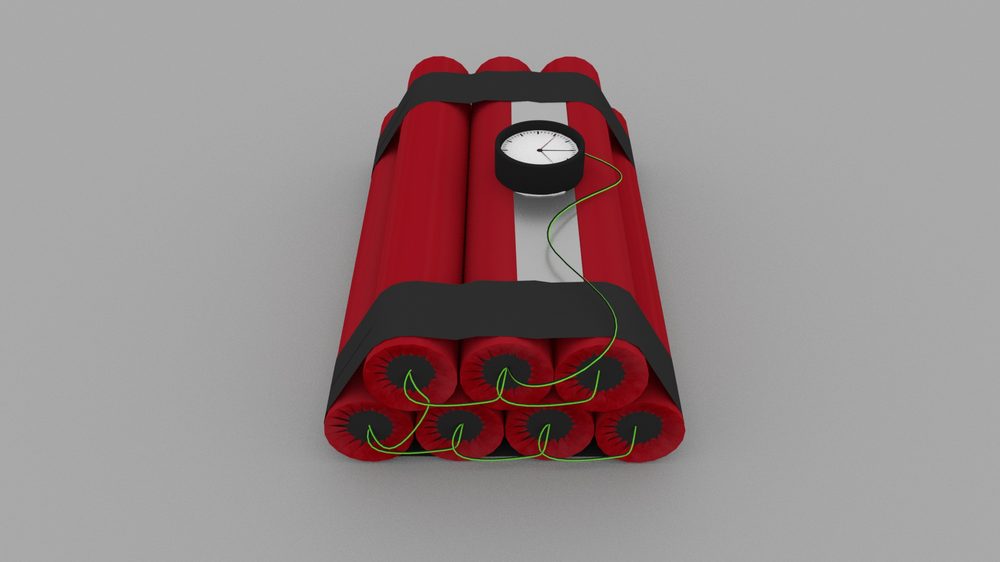
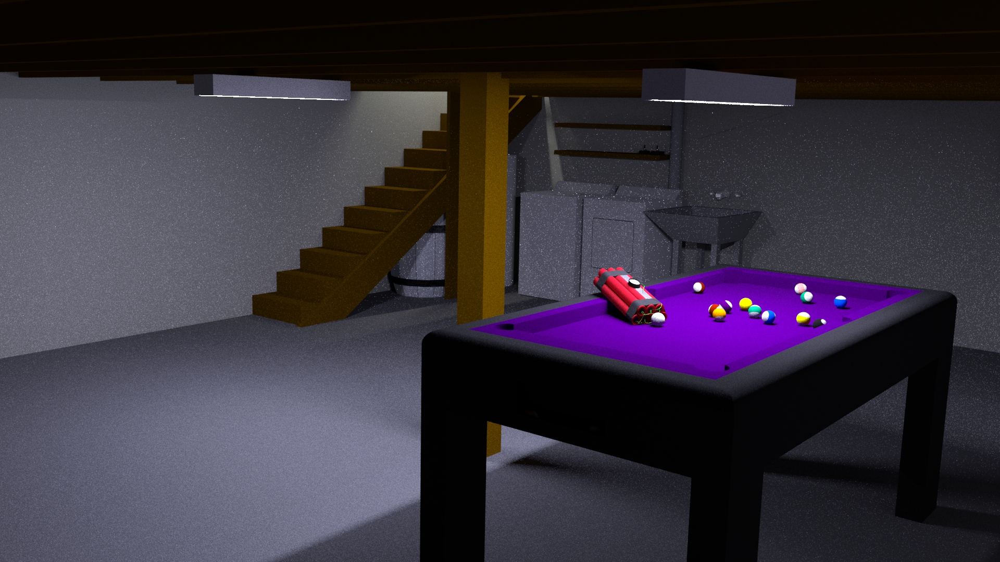
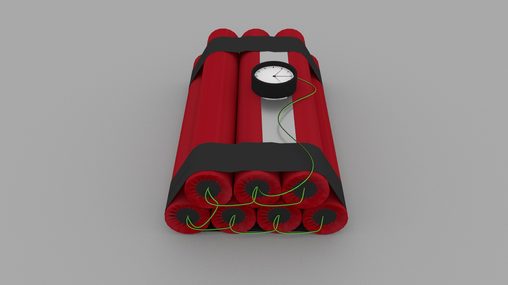
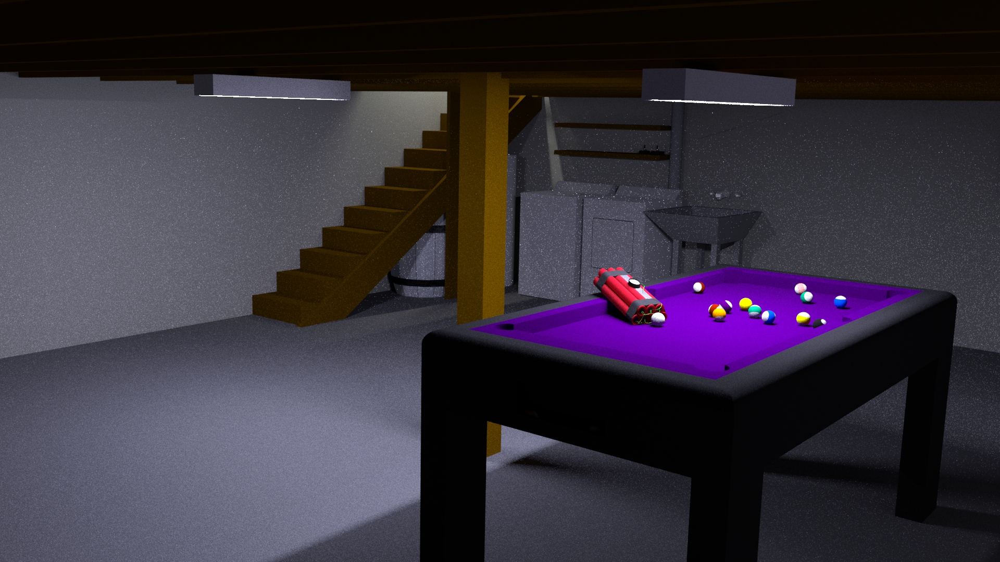
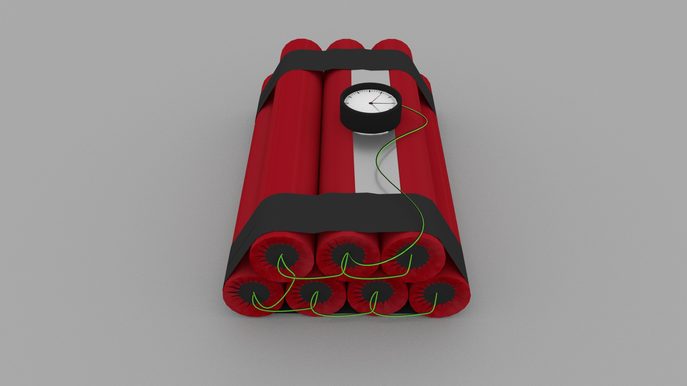
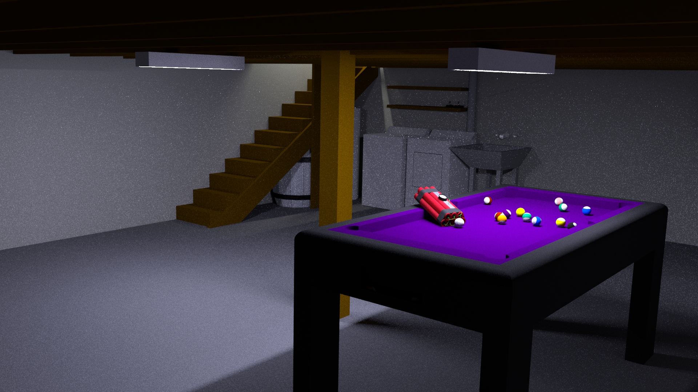
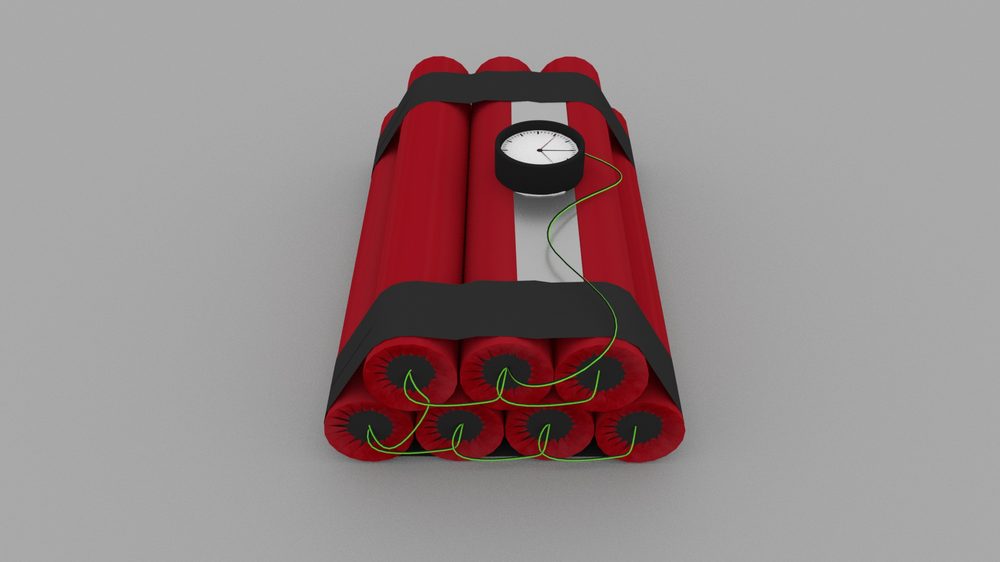
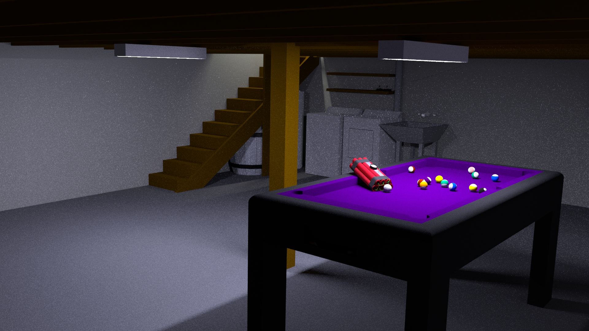
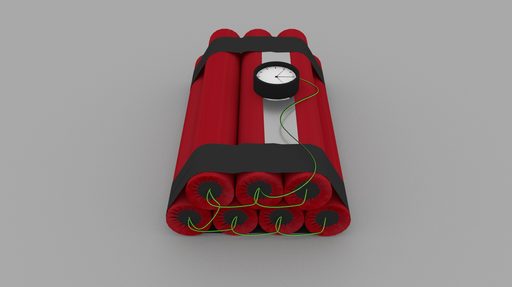

here are some stuff about me
here is some of my art i think its the bomb!
 



here is some of my art i think its the bomb!






Chester grew up in the 1920s in a patch of land in New Mexico called the Checkerboard. He and his family are Navajo, which means they live in constant conflict with the United States government. When he's old enough, Chester is sent to a boarding school where he learns English. He returns home by the time he's in high school to help his folks who have just lost 700 of their livestock to government confiscation and are struggling financially. Proud of his Navajo roots, Chester decides to sign up, along with his friend Roy Begay, for the draft in 1940 after Pearl Harbor. He's already a trained fighter and wants to keep his homeland safe.
After bootcamp, Chester and the other Navajo are recruited for a top secret mission. They are supposed to use their native language to develop an unbreakable code to transmit orders during battles. Immediately they are shipped off to the battle of Guadalcanal in 1942. The code is a success -- unbreakable. They go on to serve as code translators at the battles of Bougainville, Peleliu, and Angaur. Expecting to be sent to Iwo Jima next, Chester is surprised when he hear's he's being discharged for the fulfillment of his duty.
Back in Checkerboard, Chester struggles to readapt to civilian life. He's not allowed to tell anybody about his work as a code-talker, and he's suffering from PTSD flashbacks. Everything seems to have changed for him now, in light of all the violence he witnessed overseas. He's a motivated guy, however, and goes on to get his degree form the University of Kansas. He falls in love with a girl named Ethel. They marry and start their life in Albuquerque. After two tragic miscarriages, they end up having four healthy sons.
In 1968, the military declassifies the Navajo code project. When Chester finally tells his family about his work during the war, he's hailed as a hero. His dad is especially proud of him for honoring his heritage int he midst of such a traumatic environment. Gradually word spreads, and Chester becomes a minor celebrity. He travels around delivering speeches. The travel becomes too much for his already unstable marriage which now falls apart. Chester keeps the kids.
After his eldest dies in a car accident in 1974, Chester moves back to the Checkerboard with his sister, Dora. When she dies, he moves in with his son, Mike, and the family. By this point Chester is pretty old and losing some of his independence. He still remembers his service in the war with a great deal of pride and fondness. His wildest dreams come true when he and his fellow Navajo soldiers are awarded Congressional Medals of Honor by the president in 2001. All of his family comes together to celebrate him one last time.